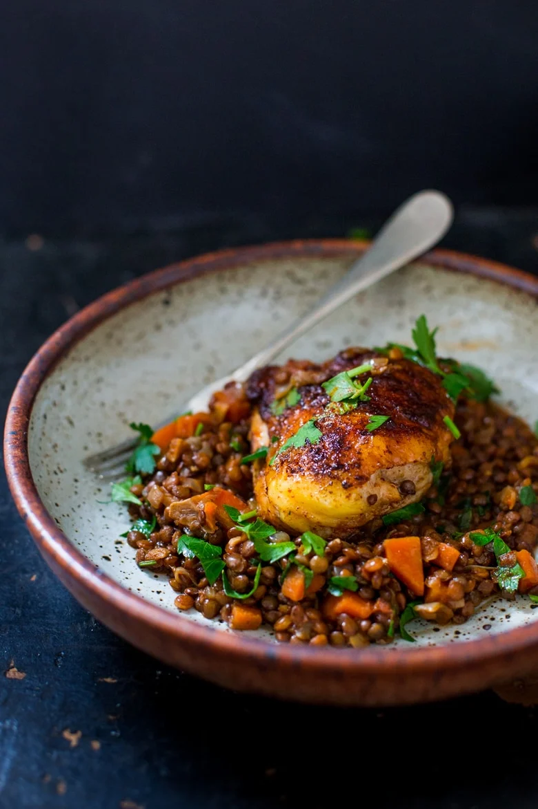

Berbere Chicken with Ethiopian Lentils

Description
Berbere Chicken with Ethiopian Lentils – a flavorful, healthy Ethiopian recipe that features Berbere Spice. This flavorful meal is vegan adaptable using tofu instead of chicken.
Ingredients
Ethiopian Lentils
- 1 cup French Green, OR Black lentils, OR Beluga Caviar lentils (do not use a split lentil)
- 3 cups water
- 2 cups diced onions
- 5 cloves garlic, minced
- 1 tablespoon fresh ginger, minced
- 1 cup diced carrot
- 1 cup diced tomato
- 2–3 tablespoons Berbere Spice Mix (see below)
- 1 teaspoon salt
- 2 tablespoon olive oil
- Fresh Italian parsley for garnish
Berbere Chicken
- 6 chicken thighs (skin-on)
- 2–3 tablespoons Berbere Spice Mix
- olive oil
- Kosher Salt
Berbere Spice Mix
- 3 tablespoons paprika
- 1 tablespoon red pepper flakes, ground plus more for extra spicy
- 2 teaspoons cumin seeds or powdered cumin
- 1 teaspoon coriander seeds or powdered coriander
- 1 teaspoon cardamom seeds (shelled) or powdered cardamom
- 1 teaspoon turmeric
- 1 teaspoon salt
- 1 teaspoon fenugreek seeds or powdered fenugreek (I use celery seed 1:1)
- 1 teaspoon black peppercorns or freshly ground peppercorn
- 1/2 teaspoon ground cloves
- 1/2 teaspoon allspice
- 1/2 teaspoon ground ginger
- 1/2 teaspoon cinnamon
Steps
- Preheat oven to 400 F
- Make the lentils: In a heavy bottom pot, or dutch oven, saute diced onion, carrots, garlic and ginger in 2 tablespoons olive oil, until tender, about 5-7 minutes. Add 2-3 tablespoons Berbere Spice mix and sauté 2-3 minutes. Add 1 cup lentils, 1 cup diced tomatoes, 1 teaspoon salt and 3 cups water, and bring to a boil, cover, turn heat to low and let cook until tender, about 30 minutes. Uncover and cook off any extra liquid.
- Make the Chicken: Pat dry the chicken and salt all sides with salt and pepper and generously rub each piece with Berbere Spice Mix. The more, the spicier.
- Heat 1 tablespoon oil in a heavy bottom skillet, on medium-high heat, place chicken skin side down and sear until it is crispy and golden, about 6- 8 minutes. Turn over, and turn heat down to medium, searing for 2-3 minutes. Place in a 400 F oven until internal temperature reaches 165F (10-15 minutes)
- Serve over a bed of the Ethiopian lentils, and garnish with fresh Italian parsley.